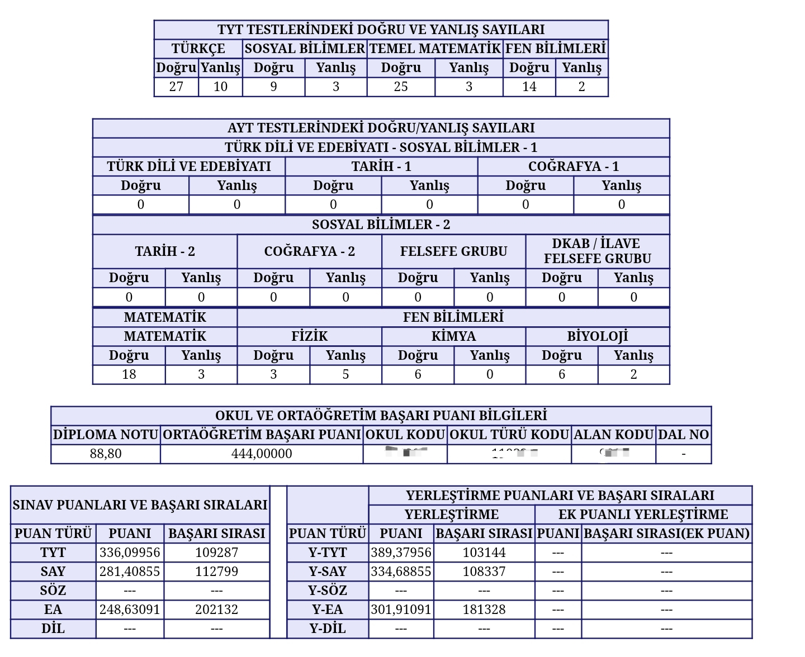
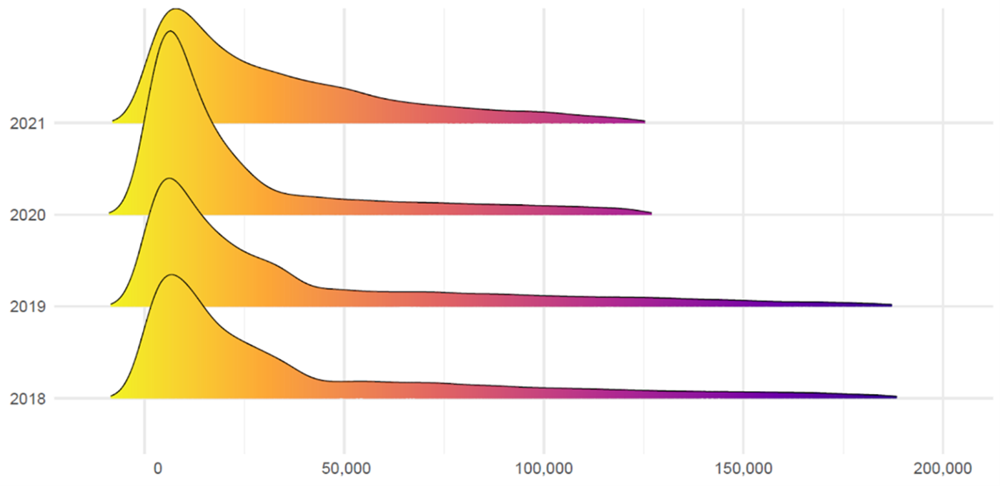
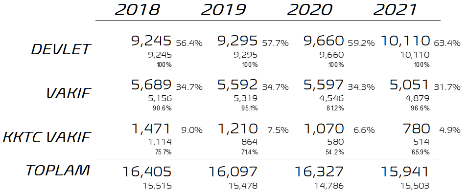
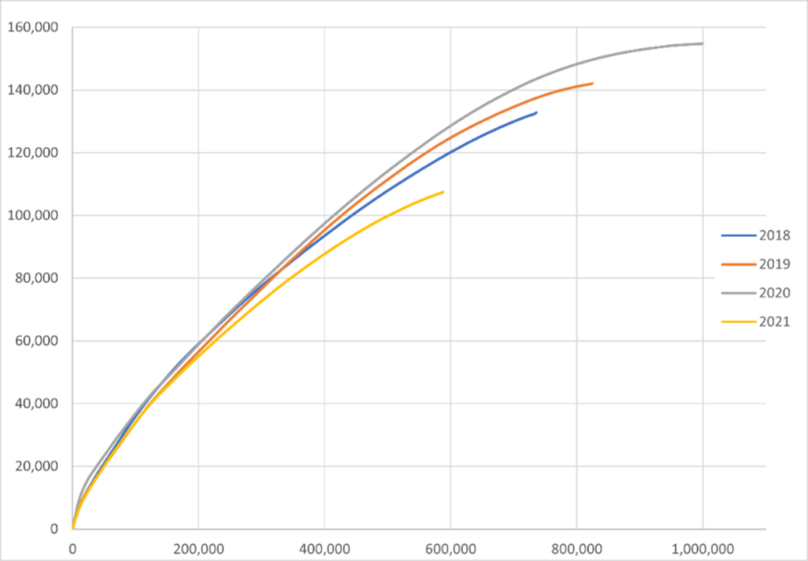
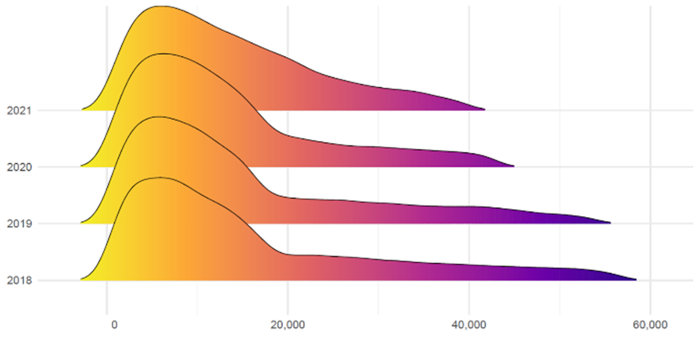

YKS Baraj Sıralamaları Üzerine
Başlamadan…
Bu yazı standart bir blog gönderisinin çok üzerinde bir uzunluktadır.
YKS’nin Bileşenleri
Üniversite öğrencisi adayları sınav sonuçlarının açıklandığı dönemde, hayatlarındaki en kritik kararlardan birini vermek için epey çetrefilli bir problemin üstesinden gelmeye çalışırlar. YKS hali hazırda oldukça karmaşık bir sistemdir. Sınavın kurgusu, uygulanışı, puanlanma sistemi gibi iç içe girmiş çok sayıda bileşenden oluşur. Başlarken sistemin temel bileşenlerinden ve kullanılan ana kavramların üzerinden kısaca geçmekte fayda vardır.
- 2018 yılından beri uygulanan YKS, peş peşe iki gün yapılan iki sınavı ifade eder. İlk aşama Temel Yeterlilik Testi (TYT) ikinci aşama ise Alan Yeterlilik Testidir (AYT). AYT sınavını takiben dil puanıyla öğrenci kabul eden Mütercim Tercümanlık veya İngiliz Dili Edebiyatı gibi bölümlere girmek isteyen öğrenciler Yabancı Dil Testine girerler1. Adaylar TYT sınavındaki tüm sorulardan sorumludur. AYT sınavında ise tercih yapacakları alana yönelik soruları yanıtlarlar.
- Üniversitede okunacak bölüme göre öğrencilerin başarı göstermeleri gereken soru blokları yıllardır ufak tefek değişikliklere rağmen artık bir genel kültür bilgisi haline gelmiştir. Örneğin Tıp, Diş Hekimliği, Eczacılık ve benzeri sağlık bilimlerini içeren lisans programları ile Mühendislik ve Mimarlık lisans programları aday öğrencilerin Sayısal (SAY) puan türünde başarı olmasını isterler. Hukuk, Psikoloji ve genel olarak İşletme Fakültesinde bulunan lisans programlarını tercih edecek öğrencilerden ise Eşit Ağırlık (EA) puan türünde başarılı olmaları beklenir. Sosyal (SOS) puan türü ise örneğin İletişim Fakültesinde bulunan bölümlere yerleşmek isteyen öğrencileri ilgilendirir. Son olarak iki yıllık önlisans programlarına yerleşmeyi hedefleyen öğrenciler ise sadece ilk adımda girdikleri TYT sınavı sonucuna göre sıralandıkları için onların hedefi TYT puan türünde başarılı olmaktır. Daha önce de bahsedildiği gibi lisans programlarını kazanmayı hedefleyen öğrencilerin tamamı TYT sınavının tüm bölümlerini yanıtlamaya çalışır.
- Puan türleri aslında soru blokları için kullanılan kısaltmalardır. Örneğin SAY puan türü TYT sınavındaki soruların tamamına ek olarak AYT sınavındaki Matematik, Fizik, Kimya ve Biyoloji kısımlarından oluşan soru bloğunun adıdır (Figür 1). Buna göre SAY puanının %40’ı TYT, geri kalan %60’ı AYT’den oluşmaktadır. Benzer şekilde EA puanının %40’ı TYT’den,gelir. Geriye kalan AYT puanı ise Matematik (%30), Türk Dili ve Edebiyatı (%18), Tarih-1 (%7) ve Coğrafya-1(%5) şeklinde toplam puanının %60’ına denk gelir. Aşağıdaki Şekil sınav puanlarının hesaplamalarında hangi soru grubunun ne kadar ağırlıklandırıldığını göstermektedir.

- Bu yıla kadar TYT sınavında uygulanan iki puan barajı bulunuyordu. Birinci baraj olan 150 puanında altında kalan öğrenciler ister ön lisans ister lisans olsun hiçbir yüksek öğretim programına başvuramıyorlardı. İkinci baraj ise 180 puan barajıydı. 150-180 puan aralığında kalan öğrenciler ön lisans programlarını tercih edebiliyor, lisans programlarına yönelik tercih yapamıyorlar, AYT sınavına girdilerse bile bu sınav değerlendirilmiyordu. Bu baraj puanları nedeniyle, yıllardır binlerce kontenjanın boş kaldığı ve yükseköğretimde milli kaynakların israf edildiği gözlerden kaçmıştır. 2021 yılında baraj puanlarının 10’ar puan geriye çekilmesi; TYT için 140 ve AYT için 170’e alınması sayesinde, önlisans programlarına 78 binin üzerinde, lisans programlarına da yaklaşık 10 bin öğrenci ek olarak yerleşmiştir. 2022 yılından itibaren bu barajlar kaldırılmıştır. Kitlesel düşük sınav başarısının faturasının öğrencilere ödetilmekten vazgeçilmesi doğru bir adımdır. 2022 yılında baraj puanlarının kaldırılmasının kontenjanlara belirgin bir etkisi olmayacağını tahmin edenler2 bu iddialarına dayanak olarak 2021 yılında boş kalan kontenjanları ve barajı geçmesine rağmen tercih yapmayan 677 bin adayı göstermektedirler. Konu, baraj puanı nedeniyle istemesine rağmen tercih yapamayan adayların önlerinde artık böyle bir engelin kalmamış olmasıdır. Öte yandan baraj puanlarının kalkmış olmasının baraj sıralaması uygulanan programlara hiçbir etkisinin olmayacağı da açıktır.
Bunlar dışında YKS sisteminin daha pek çok detayı bulunmaktadır ancak tartışmanın devamı için bu altyapı yeterlidir. Adaya tercih kararına ışık tutması amacıyla sınav sonuç belgesinde yaptığı netlerin ve bu netlere denk gelen puanların yanı sıra başarı sıralamaları da yazar. Yıldan yıla TYT ve AYT sorularının zorluk seviyeleri arasında farklılıkların olduğu bilindiği için, net sayılarına ve dolayısıyla puanlara bakarak tercih yapmak yanıltıcı olabilmektedir. Bu nedenle öğrencilerin ve ailelerinin danışmanlık hizmeti için başvurduğu rehber öğretmenler, karar aşamasında, puanlardan ziyade sıralamaların dikkate alınması gerektiğini söylerler. Aday tercih ettiği programlara önceki yılda son sırada yerleşenlerin sıralaması ile kendi sıralamasını karşılaştırarak bir strateji belirler. Konuyu somutlaştırmak adına internetten bulunan aşağıdaki sınav sonuç belgesi örneği kullanılabilir (Figür 2).
Belgenin ilk kısmında TYT sınavında sorulara verilen doğru ve yanlış yanıtlar bulunur. Devamında AYT sınavının soru bloklarındaki doğrular ve yanlışlar listelenir. Buradan sınav belgesinin SAY puan türünde bir programa yerleşmeyi hedefleyen adayın olduğu anlıyoruz. Bir alttaki kısımda orta öğretim başarı puanı (OÖBP) bilgileri verilmiştir. Son ve en önemli kısımda ise başarı sıralamaları bulunur. Soldaki tabloda OÖBP hariç adayın sıralaması3, sağda ise OÖBP eklendikten sonra sıralaması verilmiştir. Karar verilirken esas alınması gereken tablo sağdaki tablodur. Bu örneğe göre adayın SAY puan türünde sırlamasının 108,337 olduğu görülüyor. Aday danışmanları ile tercih ettiği programları bu bilgi ışığında tercih formuna işaretler ve yerleşme sonuçlarını heyecanla bekler. Ancak şekilde dikkat SAY puan türündeki sıralamaya değil de adayın pek ilgilenmediği rahatlıkla varsayılabilecek EA puan türündeki sıralamaya çevrildiğinde 181 bin seviyesinde bir sıralamada olduğu görülmektedir. Öğrenci TYT sınavındaki performansına ek olarak AYT Matematik sorularına verdiği yanıtlarla bu sıralamayı elbette hakketmiştir ve YKS, oldukça başarılı bir şekilde, adayın o ana kadar hiç aklında olmasa bile ona EA türünde de tercih yapabileceğini hatırlatmaktadır. Bu amaçla YKS, aday için EA puan türünde 181,328’inci sırayı, aday EA tercihi yapsın yapmasın ona rezerve etmiştir. İşte problem tam da burada, sistemin gücü gibi görülen bir noktada ortaya çıkmaktadır. Bu çeşit çapraz rezervasyonlar, bir sonraki bölümde detaylıca gösterileceği üzere, bazı bölümlere getirilen baraj sıralaması kısıtlarının amacını aşmasına neden olmaktadır.

Sıralamalar
YKS’de tercihler sıralamalara bakarak yapılır. Bazı bölümler için uygulanan barajlar ile ilgili kararlar da sıralamalar üzerinden verilir. YKS’nin temel başarı birimi sıralamalardır. Örneğin Hukuk Fakültesi tercihi yapabilmek için bir adayın YKS’de EA puan türünde 2019 yılına kadar sıralamasının 190 bin veya daha iyi olması gerekirdi. 2020 yılında bu baraj sıralaması 125 bine çekildi. 2022 yılından itibaren ise baraj 100 bin olarak uygulanacak. YÖK, bu kararın alınmasında rol oynayan en önemli nedenleri şu şekilde ifade etmiştir:
“Hukuk fakültelerine kabul edilen öğrencilerin başarı sıralarına bakıldığında, devlet üniversitelerinde en düşük başarı sırası 59 bin iken, vakıf üniversiteleri ve KKTC’deki üniversitelerde en düşük başarı sırasının 190 bin olduğunu görüyoruz. Buradaki makas çok açık. Sınıflarda verilen eğitimi öğrenci açısından zedeleyebilecek, eğitim öğretimin niteliğini aksatabilecek kadar geniş bir makas aralığı var…Çok farklı başarı sırasındaki öğrencilerin aynı sınıfta bulunması eğitim öğretim ortamını olumsuz etkiliyor.”4
Dolayısıyla YÖK’e göre eğitim ortamının olumsuz etkilenmemesi için Hukuk Fakültelerine yerleşen öğrenciler arasındaki sıralama farkının kontrol altına alınması gerekmektedir. Diğer bir deyişle aynı sınıfa giren öğrenci seviyeleri arasında uçurum olmamalı; mesela sınıfta en iyi ve en kötü sıralamaya sahip öğrenciler arasındaki fark 190 bini geçmemeli, hatta kademeli olarak bu fark azaltılmalıdır.
Sınıfta bulunun öğrenci grubunun akademik seviyesinin homojen ve birbirine yakın olmasının üniversitede eğitim kalitesini tanımlayan temel unsurlardan biri olduğu tartışma götürmez. O sınıf oluşturulurken, öğrencilerin üniversitede göstereceği akademik başarıyı tahmin etmekte kullanılabilecek en uygun indikatörün YKS başarısı olduğu da açıktır. Bu durumda, YKS başarısı üzerinden, baraj sıralaması kullanılarak sınıf tasarımı yapmak teoride doğru bir karardır. Geriye sadece bu gerekçelerin veride var olup olmadığını test etmek kalıyor.
Bu amaçla doğrusal interpolasyon yöntemiyle devlet veya vakıf tüm Hukuk Fakültelerine yerleşen öğrencilerin tamamının EA puan türü içinde sıralamaları tahmin edilmiş ve tahmin edilen sıralamalarının dağılımları aşağıdaki grafikte gösterilmiştir(Figür 3). Grafikte karşılaştırma da yapabilmek amacıyla aynı anda 2018’den 2021’e dört yılda Hukuk Fakültelerine yerleşen öğrencilerin dağılımı tek bir yerde gösterilmiştir. Grafikte açık renkli bölgeler ile daha düşük sıralamalar (dolayısıyla daha başarılı öğrenciler) ve koyu renkli bölgeler ile daha yüksek sıralamalar gösterilmektedir. Eğrilerin tepe yaptıkları bölgelerde öğrenci yoğunlukları fazladır. Mesela 2018 ve 2019 yıllarında Hukuk Fakültelerine yerleşen öğrencilerin büyük çoğunluğunun ilk 50 binde oldukları görülüyor. Sağa doğru sıralamalar arttıkça, bu sıralamalarda yerleşen öğrencilerin sayısı azalmaktadır. Beklendiği gibi 190 bin barajının ötesinde bir sıralamada Hukuk Fakültelerine yerleştirilen hiçbir öğrenci bulunmamakta ve eğri bu noktadan sonra yatay eksene yapışmaktadır.

2020 ve 2021 yıllarında ise eğriler 125 bin barajında sonlanmaktadır. 2018-2019 yıllarında Hukuk Fakültesi kontenjanlarının yaklaşık %56’sı devlet üniversitelerindedir (Tablo 1). Bu kontenjanlara yerleşen öğrenciler arasında en sonda gelenin sıralaması 2018 yılında 42 bin ve 2019 yılında 40 bin olmuştur. Tabloda kontenjanların jemen altında yerleşen sayıları ve dololuk oranları da verilmiştir.
|  |
Hukuk Fakültelerine yerleşen öğrencilerin geri kalan %44’ü ise çoğunlukla Türkiye’de, az sayıda KKTC’de bulunan vakıf üniversitelerine yerleşmişlerdir. Bu öğrencilerin sıralamaları nedeniyle yukarıdaki grafikte dağılımların sağa doğru uzayan kuyrukları oluşmaktadır. 2020 ve 2021 yıllarında da anlatılanın benzeri senaryolar gerçekleşmiştir.
Sayılar açık bir şekilde devlet ve vakıf üniversitelerinin Hukuk Fakültelerine yerleşen öğrenciler arasındaki sıralama farkını gözler önünde sermektedir. Dağılımların tepe bölgeleri devlet üniversitelerinin Hukuk Fakültelerine ilk 50 bin arasından yerleşen öğrencileri, sağa doğru uzayan alanlar ise 50 bin – 190 bin (2020 ve 2021 yıllarında 50 bin – 125 bin) arasında sıralamaya sahip vakıf üniversitelerine yerleşen öğrencileri göstermektedir. Dolayısıyla Hukuk Fakültelerine yerleşen öğrencilerin yıllar bazında EA puan türünde içindeki sıralama dağılımlarını gösteren grafik en duru şekilde özetlenmek istenseydi;
“Farklı başarı sırasındaki öğrencilerin aynı sınıfta bulunmasının eğitim ortamını olumsuz etkilemesi, özellikle devlet ve vakıf üniversitelerinde bu programlara yerleşen öğrencilerin sıralamaları arasındaki makasın açıklığı”
ifadesinden daha iyisi belki de bulunamazdı. Grafikte kuyruğun sağa doğru daha da uzamasının önüne geçmek için bir baraj sıralaması koymak doğru bir karar gibi görünüyor. Veri YÖK’ün verdiği kararı onaylıyor.
Problem Nerede?
Vakıf üniversiteleri bünyesinde bulunan Hukuk Fakülteleri açısından 2020 yılı bir kâbus yılı olarak hatırlanacaktır. 2020 yılından itibaren Hukuk Fakülteleri için baraj sıralamasının 190 binden 125 bine inmesinin bu fakülteleri talep edecek öğrenci sayısını nasıl etkileyeceğini hesaplamayan vakıf üniversiteleri, sonuçlar açıklandığında kontenjanlardaki boşluklara inanamadılar. Vakıf üniversitelerinde binden fazla kontenjan dolmadı, doluluk %81’de kaldı. Kıbrıs’te bulunan vakıf üniversitelerinde durum çok daha kötüydü. Dolmayan sıraların en az dört yıl süreyle boş kalacağı da düşünüldüğünde yapılan kaynak israfı daha iyi görülecektir. Vakıf üniversiteleri için kontenjan stratejisi yıl boyunca verilen en önemli yönetsel karardır. Baraj sıralamasının 190 binden 125 bine düşürülmesi, Hukuk Fakültesi tercihi yapacak öğrenci sayısını kabaca üçte bir oranında azaltacağı apaçık ortadaydı. Muhtemelen şu üç saptama karar vericilerin durumu doğru bir şekilde değerlendirmelerini gölgeledi.
- EA puan türünde öğrencilerin en çok tercih ettikleri programlar yıllardır Hukuk Fakülteleriydi.
- Hukuk Fakültelerinin toplam kontenjanı 16 bin seviyesindedir.
- 125 bin EA öğrencisi hala Hukuk Fakültesi tercihi yapabilecektir.
İlk iki maddede bir sıkıntı yoktur. Problem üçüncüsünde. Ortalıkta Hukuk Fakültesi tercihi yapabilecek öğrenci sayısı 125 bine yakın bile değildi. Çünkü aslında en başta, 2018 yılında, baraj sıralaması henüz 190 binken Hukuk Fakültesi tercihi yapabilecek öğrenci sayısı 190 bin değil, sadece 57 bin’di! Bu sayı benzetim modelleriyle elde edilen bir tahmin ve haliyle hata payı içeriyor. Ama hata payı 57 bin ile 190 bin arasındaki açıklığa göre ihmal edilebilir seviyede kalmaktadır. Haliyle baraj 125 bine indirildiğinde Hukuk Fakültesi tercihi yapabilecek öğrenci sayısı varsayılanın çok çok altında kaldı.
Bir an için 2018 yılına odaklanıldığında; ilk 190 bin EA sıralaması içinde, SAY puan türünde ilk 100’e giren öğrencilerin tamamı, hatta ilk 1000’e giren öğrencilerin tamamı, hatta ilk 10bin’e giren öğrencilerin ve hatta ilk 100bin’e giren öğrencilerin büyük bir kısmı bulunmaktadır. Figür 1’de gösterildiği üzere SAY öğrencileri ve EA öğrencileri için hem TYT sınavı hem de AYT’nin Matematik kısmı ortaktır. Dolayısıyla farklı puan türleri arasında sıralamalarda çaprazlamasına bir girişim (iç içe girme) olması beklenen bir durumdur. Ancak bu girişimin boyutu ve düzensizliği üzerine şimdiye kadar bir çalışma yapılmamış olması ilginçtir.
Tablo 2’de verilen sayılar ÖSYM tablolarından elde edilmiştir. 2018 yılında EA ile yerleşen toplam öğrenci sayısı yaklaşık 133 bindir. Bu öğrencilerin 57 bini ilk 190 bin sıralama içinde kapanan bölümlere yerleşmiştir. Ayrıca bu 57 bin öğrenci arasından 15,500’ü Hukuk geri kalan 41,500 ise Hukuk dışında diğer EA programlara yerleşmiştir. Diğer bir deyişle 2018 yılında sınav sonuç belgesinde EA türünde sıralaması 190 bin yazan öğrencinin EA programına yerleşen tüm öğrenciler arasında sıralaması sadece 57 bindi.
 |
2019 yılına gelindiğinde EA türünde 190 bininci sıranın gerçekte karşılığı 54,500 oldu. Dolayısıyla bir önceki yıla göre yaklaşık 2500 daha az öğrenci Hukuk Fakültesi tercihi yapabilme şansı elde etti. Bu iki yıl karşılaştırıldığında 2019 yılında SAY ve EA puanlarının birbiri içine girişiminin 2018’e göre daha fazla olduğu görülmektedir. Bu durumun arkasında yatan nedenden5 bağımsız olarak, 2019 yılındaki 2500 öğrenci arasından biri bile, istemesine rağmen Hukuk Fakültesi tercihi yapamadıysa, bunun nedeni öğrencinin başarısız olması değildir. Baraj sıralamasının 125 bine çekildiği 2020 ve 2021 yıllarında da benzer bir durum gerçekleşmiştir. 2021 yılında 2020’ye göre 3000 daha az sayıda öğrencinin Hukuk Fakültesi tercihi yapabilme şansı olmuştur.
2020 yılında baraj sıralamasının kâğıt üzerinde 190 binden 125 bine çekilmesi, gerçekte 57 binden 43 bine çekilmesi anlamına gelir. Aynı cümle 2018, 2019 veya 2021 için kurulsaydı sayılar bambaşka olacaktı. Aradaki farklar; 2500 veya 3000 sayıları, Hukuk Fakültelerine yerleşen öğrencilerin toplamının %20’sine denk gelmektedir.
Toparlamak gerekirse, “Farklı başarı sırasındaki öğrencilerin aynı sınıfta bulunmasının eğitim ortamını olumsuz etkilememesi” adına baraj sıralaması konuluyor. EA puan türünde şu ana kadar iki adet sıralamadan bahsedildi. Birincisi öğrencinin sınav sonuç belgesinde yazan “birincil” sıralama. İkincisi ise EA türünde programlara yerleşen öğrencilerin birbiri içindeki “türevsel” sıralama. Basit doğrusal interpolasyon yöntemleri kullanarak sıralamalar arasında bir ilişki yakalanabilir. Yıldan yıla bu iki sıralama arasındaki ilişki de değişmektedir.

Hukuk Fakültesine yerleşen öğrencilerin birincil sıralamalarına göre dağılımları yukarıda Figür 3’de tartışılmıştı. Türevsel sıralamaya göre dağılımlar incelendiğinde (Figür 4) sağa doğru uzayan kuyrukların çok daha kısa olduğu, hatta 2021 yılı dağılımında kuyruk formasyonunun neredeyse kaybolduğu görülmektedir. Haliyle, hukuk fakültesine yerleşen öğrenciler arasındaki sıralama farkı da azalmaktadır. Dolayısıyla baraj sıralamasının 2022 yılında daha da geriye, 100 bine çekilmesi için konulan rasyonelin içi de bir anlamda boşalmaktadır. Hatırlanacağı üzere birincil sıralama dağılımları kullanılarak yapılan tartışmada hukuk fakültelerine yerleşen öğrenciler arasındaki sıralama farkının büyük olduğu sonucuna varılmıştı. Ancak türevsel sıralama dağılımları üzerinden yapılan çıkarım birincil sıralama dağılımları ile elde edilenle çelişmektedir. EA puan türüyle öğrenci alan Hukuk fakültesine yerleşen öğrenciler arasında “gerçek” sıralama farkı hesaplanırken SAY puan türünde yerleşen öğrencileri hesaba katmanın hiçbir faydası olmadığına göre, birincil sıralamalar üzerinden yapılacak çıkarımlar yanıltıcı olacaktır.

Sınıf tasarımı ve eğitimin kalitesi ile ilgili bazı parametreleri düzenleme amacıyla öğrenciler arasındaki sıralama farkını kontrol altına almaya çalışmanın haklı bir gerekçe olduğunu kabul ediyoruz. Bununla birlikte, birincil sıralamalar üzerinde tanımlanan baraj sıralaması kuralının, uygulamada yıllar arasında adaletsiz durumlara sebep verdiği de görülmektedir. 2018-2019 ve 2020-2021 yılları arasındaki karşılaştırmalarda, aynı baraj sıralamasının sonuçlarının uygulamada ne kadar farklı olduğu ortadadır.
Türkiye Barolar Birliği, mezuniyet sonrası doğrudan meslek icrasına başlayacak öğrencilerin eğitimlerinde asgari kalite unsurlarının gözetilmesi adına, baraj sıralaması uygulamasını desteklediklerini açıklamıştır6. Baraj sıralamasını desteklerken; kontenjanları ve dolayısıyla mezun sayısını kısıtlayarak eğitimin kalitesini düzenleme gibi ifadelerin bir arada kullanılması, var olmayan bağlantıları kurma çabası gibi görülmektedir. Sıralamada “diğerlerinin” önünde yer almak başarıdır, bu doğru. Ancak tek başına yeterli bir başarı kriteri değildir. Eğitimde kaliteyi öğrencilerin birbiriyle rekabeti üzerinden tanımlanan kısıtlamaları kullanarak düzenlemeye çalışmak tercih edilmemelidir. Sıralama bazlı düzenlemeler yerine, mutlak başarı kriterlerinin tanımlanması hem adil hem tutarlı hem de açıklanabilir olması açısından önemlidir. Kaldı ki meslek odaları bu şekilde geri bildirim yaparken gerçekten gelecekteki meslektaşlarının eğitim kalitesini mi gözetiyorlar, yoksa mesleki rekabeti kontrol altına mı alıyorlar?
YÖK’ün 16 Şubat 2021 tarihli açıklamasında7; baraj sıralamasının 190 binden 125 bine düşürülmesine rağmen, 2019 ve 2020 yıllarında hukuk fakültelerine yerleşen öğrencilerin sayısının 15.721’den 15.070 düşmesi kontenjan planlamasına kalite odaklı bir katkı olarak değerlendirilmektedir. Burada kontenjan planlamasına yönelik yapılan kalite odaklı katkıdan ne kastedildiği anlaşılamamaktadır. Sonuçta vakıf üniversitelerinin kontenjanları YÖK tarafından onaylanmaktadır. YÖK’ün Türkiye genelinde belirlediği politikalar gereği, vakıf üniversitelerinin talep ettikleri kontenjanlarda büyük çaplı değişikliklere 8 gittiği bilinmektedir. Diğer bir ifade ile tüm kontenjanları ve bu kontenjanlardaki burs dağılımları YÖK tarafından sınavın öncesinde onaylanıp duyurulmaktadır. 2020 yılı hukuk fakültelerinin kontenjanlarında 2019 yılına göre artış yapıldığı Tablo 1’de görülmektedir. Yani baraj sıralamasının düşürülmesi nedeniyle YÖK’ün bizzat onayladığı kontenjanlarda büyük boşluklar oluşmuştur. Bu boşluklar, vakıf üniversitelerinin kısıtlı kaynaklarının israf edilmesine ve o sıralara oturmayı hedefleyen öğrencilerin hayal kırıklığına uğramasına neden olmuştur.
YÖK tarafından yapılan açıklamada ayrıca,
“2020-YKS’de, Devlet üniversiteleri hukuk fakültelerine en düşük puanla yerleşen adayın başarı sıralaması 33.813; vakıf üniversiteleri hukuk fakültelerine yerleşen en düşük puanlı adayın başarı sıralaması ise 125.000’dir. Bu rakamlar başarı sıralaması şartının yükseltilmesinin önemine de işaret eden bir husustur.”
denmektedir. Bu ifadeden de karar vericilerin salt birincil sıralamaya baktıkları, ilgili puan türü içinde sıralamaları incelemedikleri anlaşılmaktadır. Dolayısıyla verdikleri kararın pratikte öngörülenden farklı bir etki yarattığı ve sonuçların bölüm talepleri ve genel olarak kontenjanlar üzerinde yanlış okumalara neden olduğundan haberdar olmadıkları anlaşılmaktadır.
Çözüm Önerileri
Her ne kadar yeni üniversitelerin ve fakültelerin açılması konusunda yetki politika yapıcılarda9 olsa da YÖK elindeki araçlarla hala ulusal stratejileri belirleyebilme gücüne sahiptir. Dolayısıyla hukuk fakültelerinin kontenjanlarını kısıtlayarak öğrenciler arasındaki rekabeti arttırabilir ve daha çalışkan ve bilgili öğrencilerin hukuk fakültelerine yerleşmesini sağlayabilir. Aslında bu durumda da eğitimin kalitesi öğrenciler arasındaki rekabet üzerinden belirlenecektir. Ancak en azından yıldan yıla tutarlı ve önceden belirli bir kısıt tanımlanmış olmaktadır.
Eğitimin kalitesini düzenleme amacıyla uygulanan baraj sıralamaları yerine mutlak beceri kriterleri belirlemek yukarıda tartışılan problemlerin ortadan kalkmasını sağlayacaktır. Hukuk fakültesi tercihi yapacak öğrenci sayısını kısıtlamak için YKS sonucu oluşan sıralama değil de sınavın bizzat kendisi kullanılabilir. Belli soru gruplarında belirlenen barajın üstünde net yapan öğrencilerin tercih yapmalarına izin verilebilir. Bu barajların ne olması gerektiği meslek odaları, eğitimciler, üniversiteler ve konunun diğer paydaşları tarafından tartışılabilir. Gerektiğinde barajlar yükseltilir veya düşürülebilir. Ancak öğrenciler her durumda en baştan oyunun kurallarını bilirler. Üniversiteler kontenjan stratejilerini yaparken, kaç öğrencinin barajın üzerinde kalacağını tahmin etmeye çalışırlar. Barajın üzerinde kalan öğrenci sayısının yıldan yıla artması orta öğretimde eğitimin kalitesinin yükseldiğine yönelik bir işaret olarak görülür. Bu durumda popüler programlara yerleşmek isteyen öğrencilerin aralarındaki rekabet de artar. Tam tersi durumda, yani barajı geçen öğrenci sayısı azaldığında, problemin kaynağı da belli olacaktır. Yükseköğretimin paydaşları problemin çözümünün nerede olduğunu bilecekler ve kaynakları doğru bir şekilde yönlendirebileceklerdir. Bu çözüm önerisinin mevcutta uygulanan ile arasındaki temel fark; önerilenin mutlak referanslara, mevcutta uygulanın ise göreli ve sıralamaya bağlı referanslara sahip olmasıdır.
Eğitimciler yukarıdaki paragrafta önerilen stratejinin dayanak noktasının yıldan yıla geçerliği ve güvenilirliği değişmeden yüksek kalan bir YKS olduğunu fark edeceklerdir. Ancak milyonlarca gencin yüksek öğretim hayatına yön veren bir sistemin bu ölçme değerlendirme metodolojisinin en temel iki unsuruna sahip olmadan uygulanması düşünülemez. Dolayısıyla YKS’nin yıllar içinde uygulamalarında bir ölçme değerlendirme sistemi olarak belirli istatistiki özelliklere sahip olduğu varsayılmaktadır.
2022’de Ne Olacak?
2021 yılı için yapılan tahminlere göre ilk hukuk fakülteleri için baraj sıralaması 125 binden 100 bine geri çekildiğinde EA puan türünde bulunan öğrenci sayısı 40 binden 34 bine düşecektir. Diğer bir deyişle öğrenci sayısında %15 bir azalma olacaktır. Bu durumda vakıf üniversitelerinin hukuk fakülteleri kontenjanlarının değişmeyeceği varsayımı altında en az 500 boşluk tahmin edilmektedir. Hiçbir üniversitenin kontenjanlarını kendi inisiyatifiyle kısmayacaktır çünkü böylesine bir hamlenin stratejik anlamda bir hata olduğu açıktır. Vakıf üniversiteleri tercih döneminde, kendi kontenjanlarının boş kalmaması adına, tercih indirimi veya aynı işe hizmet eden farklı isimlerde indirimler veya promosyonlar uygulayacakları da öngörülmektedir.
Dipnotlar
Ancak bu bölümler için herhangi bir sıralama şartı olmadığı için Yabancı Dil Testi bu yazının kapsamı dışında kalmaktadır.↩︎
https://www.milliyet.com.tr/yazarlar/abbas-guclu/yks-2021de-neler-oldu-2022de-neler-bekleniyor-6758919↩︎
Bu tablo, tercihler ile ilgili hiçbir amaca hizmet etmez.↩︎
https://www.yok.gov.tr/Sayfalar/Haberler/2019/yok-universiteye-giriste-basari-sirasi-citasini-yukseltti.aspx↩︎
Bu değişimin nedeni, ilgili yılın sınav dinamikleri nedeniyle, farklı puan türleri arasındaki yukarıda açıklanan girişimin sıralamalar üzerindeki etkisidir. Yıldan yıla alan spesifik soruların zorluğu ve/veya ek süre verilip verilmemesi gibi faktörler, farklı puan türleri arasındaki girişimi etkilemektedir. Örneğin 2021 yılındaki sınavda, Matematik sorularının geçmiş yıllara göre daha zor olması, sayısal öğrencilerin eşit ağırlık puan türünde ekstra avantajlı olmasına yol açmış ve eşit ağırlık öğrencilerinin önceki yıllara oranla sıralamada geriye düşmelerine sebep olmuştur. 2019 yılında eşit ağırlık öğrencilerinin lehine bir sınav sayesinde bu durumun tersinin gerçekleştiğini rahatlıkla söyleyebiliriz. Dolayısıyla hukuk fakülteleri özelinde yaptığımız bu tartışmanın aslında baraj sıralamasının olduğu tüm bölümler için de geçerli olduğu açıktır.↩︎
Baraj sıralamasının 190 binden 125 bine düşürülmesiyle ilgili olarak;
Bu değişiklik, hukuk fakültelerini daha çalışkan ve donanımlı öğrencilerin kazanabilecekleri anlamına gelmektedir. Aynı zamanda devlet üniversitelerindeki hukuk fakülteleriyle, vakıf üniversitesi hukuk fakülteleri arasındaki eğitimin niteliğini doğrudan etkileyen makas daralmış olacak, bu da öğrenim kalitesindeki yetersizlik nedeniyle tercih edilmeyen üniversitelerin, çalışkan ve bilgili öğrenciler tarafından tercih edebildiği hukuk fakültelerine dönüşmelerine fırsat yaratacaktır.”
(http://tbbdergisi.barobirlik.org.tr/Dergi/Dergi145/9/)
Baraj sıralamasının 125 binden 100 bine düşürülmesi ile ilgili olarak;
“Hukuk fakültelerine yerleştirmedeki başarı sıralaması şartı YÖK Genel Kurulunca 2021-2022 yılı öğrenci yerleştirmelerinde geçerli olmak üzere 125.000’den 100.000’e yükseltilmiştir. Eğitim öğretim kalitesinin yükselmesini sağlayacak, yeni fakülte açılması taleplerini azaltacak, boş kalacak kontenjanlar sebebiyle mevcut bazılarının da birleşmesi veya kapanması sonucunu zaman içerisinde doğuracak bu önemli kararı destekliyor ve teşekkür ediyoruz.”
(https://www.barobirlik.org.tr/Haberler/feyzioglu-yokun-hukuk-fakulteleri-onemli-kararini-destekliyorum-81612)↩︎
https://www.yok.gov.tr/Sayfalar/Haberler/2021/hukuk-fakultesi-basari-sarti.aspx↩︎
Maalesef vakıf üniversitelerine danışmadan, hiçbir açıklama yapmadan ve itiraz hakkı tanımadan.↩︎
http://www.idare.gen.tr/oder-fakulte-kurma.pdf↩︎
Yeniden kullanın
Alıntı
@online{serkanalbayrak2022,
author = {Raif Serkan Albayrak},
title = {YKS Baraj Sıralamaları Üzerine},
date = {2022-06-24},
langid = {tr}
}